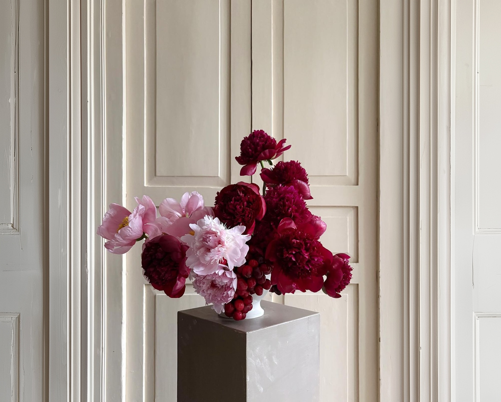

The resting control — six builds
What the header carries when nothing is open. Every sample below is the live control, not a picture of one — click a row and the nav takes it, then open the search to see the pair working together. Label ships (Amelie, 2026-09-23); the other five are kept here as the record of what was weighed against it.
New in
See all
The page is here to be pushed. Open the search and watch where this sits.